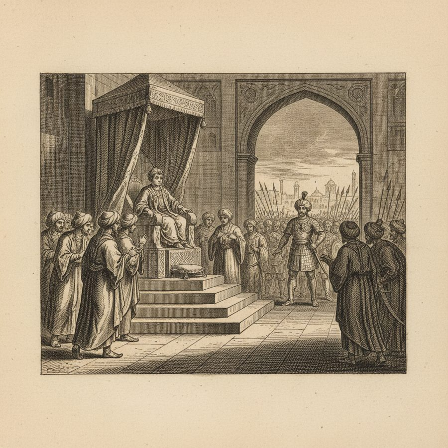
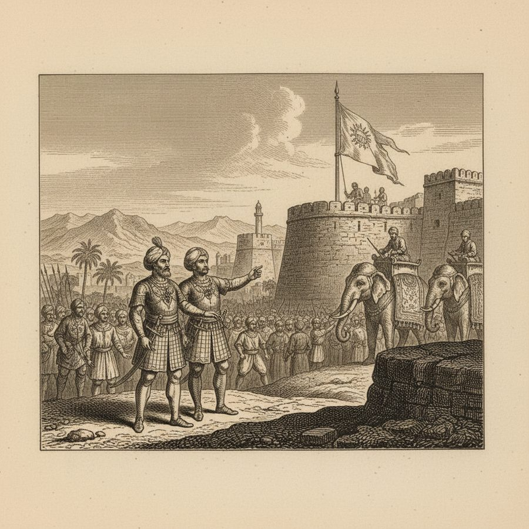
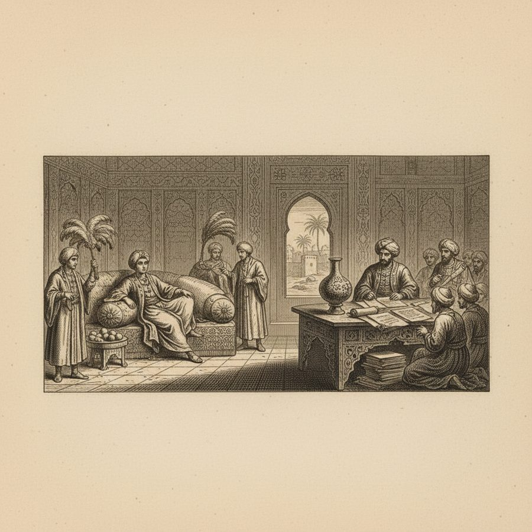
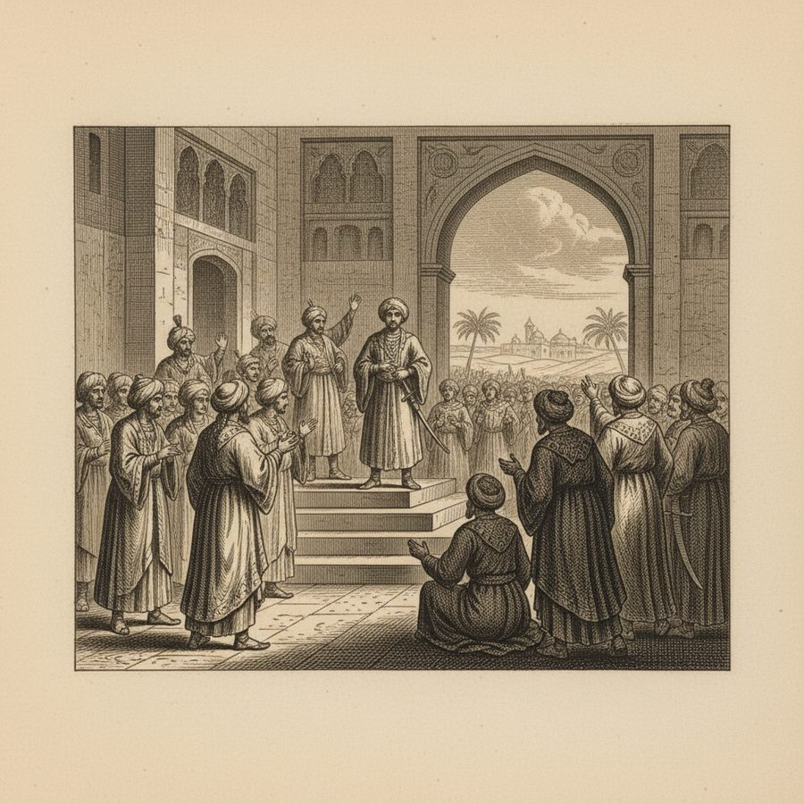
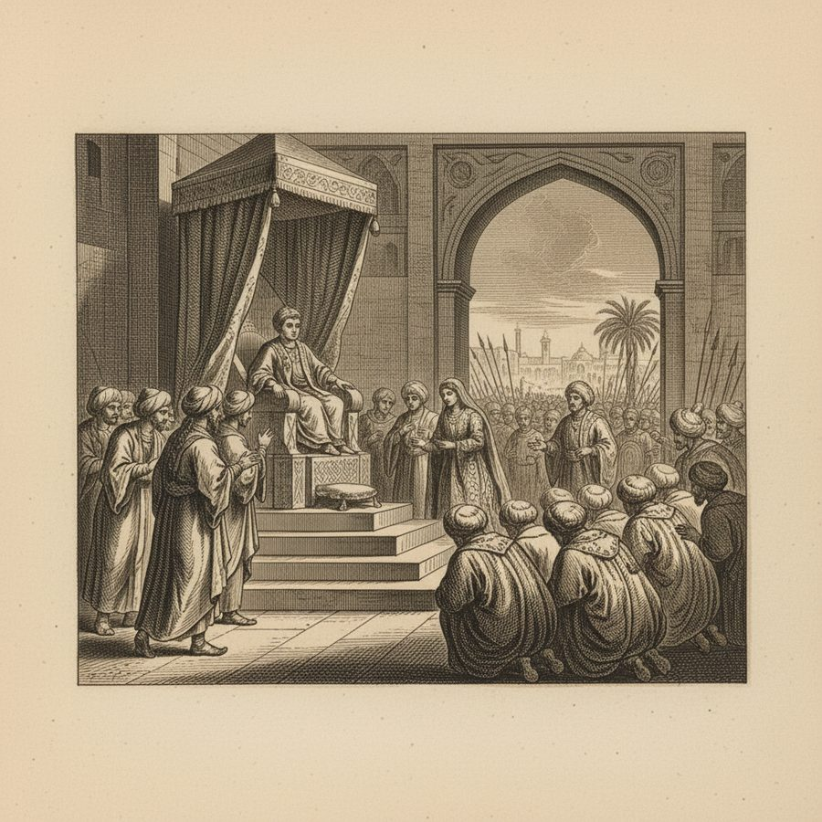
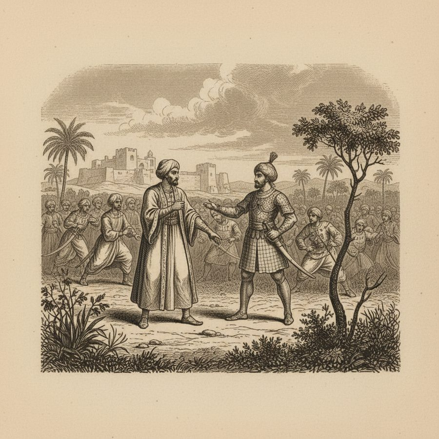
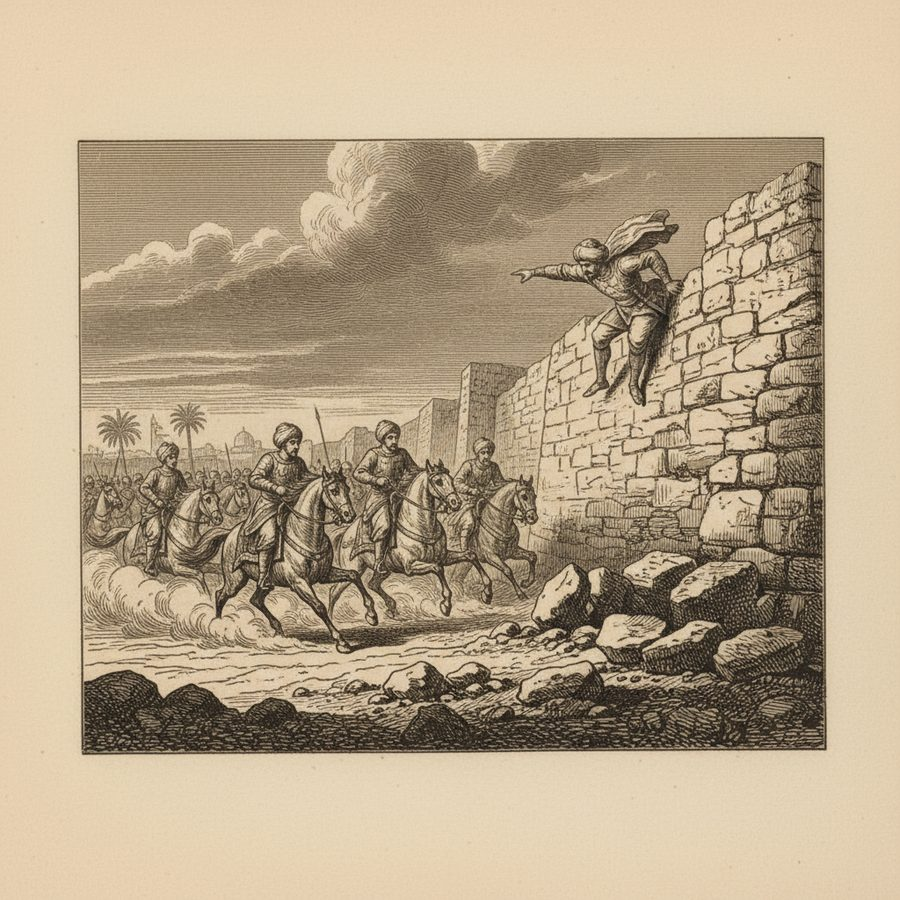

The Slave Who Became King — the Rise of Sabuktigin
From the auction block to the throne — the elected slave who founded the Ghaznavid empire.
In the 10th century, the Samanid empire of Bokhara was run by Turkish slave-soldiers. When the boy-king Munsur took the throne, his greatest general, Abistagi, knew a summons home meant death — so he 'stood behind his disobedience with thirty thousand men,' marched to Ghazni, and raised his own standard of royalty. Among his officers was Subuctagi, originally a Turkish slave, who 'from a low degree raised himself by his valour' until he governed Chorassan and led the raids upon the Rajas of Hind. When Abistagi died, his son Abu Isaac — 'very young and addicted to pleasure' — gladly left the whole administration to Subuctigin, and 'soon travelled the road of mortality.' In the year 367 of the Hegira (977 AD), the Omrahs of Ghazni, 'who admired the wisdom and bravery of Subuctagi, unanimously elected him their King.' The slave had become a Sultan; he married his old master's daughter and 'turning his mind wholly upon the art of government, soon established justice in his dominions, and held the hearts of his subjects in his hand.' The book preserves one perfect parable of his rule: he restored the dispossessed chief Tigha to his fort on a promise of tribute; Tigha broke his word; the King dissembled, invited him to the chase, and alone with him, upbraided his ingratitude. Tigha drew his sword and wounded the King's hand — but the attendants poured in, the pursuit was so hot that the royal troops entered the fort at Tigha's own heels, and the ungrateful chief escaped only by leaping the wall and fleeing to Kirman. The dynasty this slave founded would, under his son Mahmud, become the first great Muslim empire of India.
Figures: Subuctagi (Sabuktigin), Abistagi (Alptigin), Abu Isaac, Munsur of Bochara, Tigha of Bust
The story as a comic







Why it stands out
The Ghaznavid empire — the power that carried Islam deep into the subcontinent — was founded by an elected slave. His story is the book's cleanest illustration of the slave-soldier system that made medieval Islamic dynasties: merit could carry a man from the auction block to a crown, and the Tigha episode shows the personal, hunting-field style of early kingship.